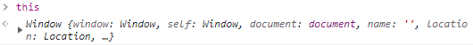
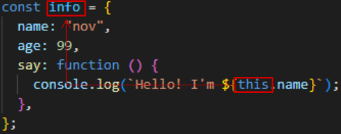

this keyword는 다른 객체지향 언어(Java, C++...)에서도 등장하는 개념입니다.
일반적으로 프로그래밍 언어에서 this랄 자기 자신을 가리키는 참조 변수입니다.
하지만 JavaScript 에서의 this는 다른 언어들과는 달리 호출하는 대상에 따라서 가리키는 대상이 달라져 기본 작동 원리를
확실하게 이해하지 않으면 상당히 애를 먹을 수 있습니다.
따라서 이번 포스팅 에서는 JavaScript의 this keyword에 대해 정리해 보고자 합니다.
?목차
...Before Start
1. 단독으로 호출되는 this
2. 함수 내부에서 호출되는 this
3. 메서드에서 호출되는 this
4. 화살표 함수 내부에서 호출되는 this
Note
...Before Start
this keyword에 대해 공부하기 전에, 엄격 모드 (strict mode) 에 대해 이해할 필요가 있습니다.
엄격 모드 (strcit mode)란, ES5(ECMA Script5)에서 추가된 모드로, ES5 이전 버전까지 JavaScript가 묵인했던 에러들의 에러 메시지를 발생시킵니다.
strict mode의 적용 여부에 따라 this keyword의 호출 결과가 달라지기에 그 점에 유의하여 읽어 주시기 바랍니다.
strict mode 적용 방법은 JS 코드 최상단부에 "use strict" 문구를 명시해 주면 됩니다.
1. 단독으로 호출되는 this

this keyword를 단독으로 호출하는 경우, 최상위 객체인 window object 를 가리킵니다.
2. 함수 내부에서 호출되는 this
함수 내부에서 this keyword를 호출하는 경우 undefined를 리턴합니다. 단, 이는 strict mode 적용 여부에 따라 달라집니다.
strict mode 적용 O → undefined return
// strict mode 적용
"use strict";
function thisFunction() {
console.log(this);
}
thisFunction();undefined
strict mode 적용 X → window Object return
// strict mode 적용 x
function thisFunction() {
console.log(this);
}
thisFunction();window
3. 메서드 내부에서 호출되는 this
객체 내부의 메서드에서 호출된 this는 항상 메서드를 호출한 객체를 가리킵니다.
const info = {
name: "nov",
age: 99,
say: function () {
console.log(`Hello! I'm ${this.name}`);
},
};
info.say();
say 메서드 템플릿 리터럴 내부의 this는 say 메서드를 호출한 객체인 info를 가리키게 됩니다.
따라서 info 객체의 name 프로퍼티를 출력합니다.
Hello! I'm nov
4. 화살표 함수 내부에서 호출되는 this
화살표 함수 내부에서 this keyword를 사용하는 경우 화살표 함수 내부가 아닌 상위 스코프에서 가리킬 대상을 찾습니다.
const arrowFunction = () => {
console.log(this);
};
arrowFunction();
arrowFunction 내부의 this는 상위 스코프 (global scope) 인 window object를 출력하게 됩니다.
window
이번에는 객체 내부의 메서드를 화살표 함수로 정의한 뒤 this를 호출해 보도록 하겠습니다.
const info = {
name: "nov",
say: () => {
console.log(`Hello I'm ${this.name}`);
},
};
info.say();
언뜻보면 "Hello I'm nov" 문자열이 출력될 듯 하지만 실제로 실행해 보면 "Hello I'm" 까지만 출력되고 뒤에 ${this.name}은 출력되지 않습니다.
Hello I'm
이는 JS에 익숙하지 않은 프로그래머가 쉽게 저지를 수 있는 실수인데요,
객체를 생성할 때 작성하는 문법인 literal object { .. } 를 스코프 scope { .. } 로 착각해서 발생하는 에러입니다.
앞에서 화살표 함수 내부에서 this keyword를 호출하는 경우 상위 스코프 [parent scope] 에서 가리킬 대상을 탐색한다고 했습니다.
따라서 this keyword 의 상위 스코프인 global scope 인 window object를 가리키게 되고, window object 내부에서 name 프로퍼티를 탐색하였더니 아무런 값이 존재하지 않아 빈 값을 출력하는 것 입니다.
"scope"에 대한 내용이 궁금하신 분들은 다음 포스팅을 참고해 주세요. → 미완성...
window.name = "nov";
const info = {
name: "nov",
say: () => {
console.log(`Hello I'm ${this.name}`);
},
};
info.say();실제로 그런지 확인해 보겠습니다. 1번째 라인에서 window 객체에 name 프로퍼티에 "nov"라는 값을 입력하고 say 메서드를 호출해 보니 이번에는 "Hello I'm nov"라는 문자열이 출력됩니다.
하지만 메서드를 arrow Function을 이용해 정의하는 것은 매우 좋지 않은 코딩 스타일입니다.
따라서, 객체 내부의 메서드를 정의할 때는 함수 선언문 [Function Declaration] 혹은 함수 선언식 [Function Statement] 방식을 사용하는 것을 권장합니다.
마치 변수를 선언할 때 var keyword를 사용할 수 있지만 대안으로 let, const keyword를 사용하는 것 처럼 말이죠.
?Note
JS에서 this는 누가 호출하느냐, 그리고 strict mode(엄격 모드) 사용 여부에 따라서 가리키는 대상이 달라진다.
1. this keyword를 단독으로 사용할 경우 상위 스코프인 window object를 반환한다.
2. 함수 내부에서 this keyword를 사용하는 경우 strict mode를 명시하면 undefined를 키지 않으면 window를 가리킨다.
3. 메서드 내부에서 this keyword를 사용하는 경우 메서드를 호출한 객체를 가리킨다.
4. 화살표 함수 내부에서 this keyword를 사용하는 경우 상위 스코프에서 가리킬 대상을 탐색한다.
5. 메서드로 화살표 함수를 사용하는 것은 지양하고, 대신 함수 선언문 혹은 함수 선언식 방법으로 정의하자.
이상으로 JS에서 this keyword의 작동 원리에 대해 알아 보았습니다.
이어지는 포스팅 에서는 메서드에서 this keyword를 사용하는 방법에 대해 더 자세하게 정리해 보도록 하겠습니다.
도움이 되셨다면 하단의 공감 부탁드립니다. ?